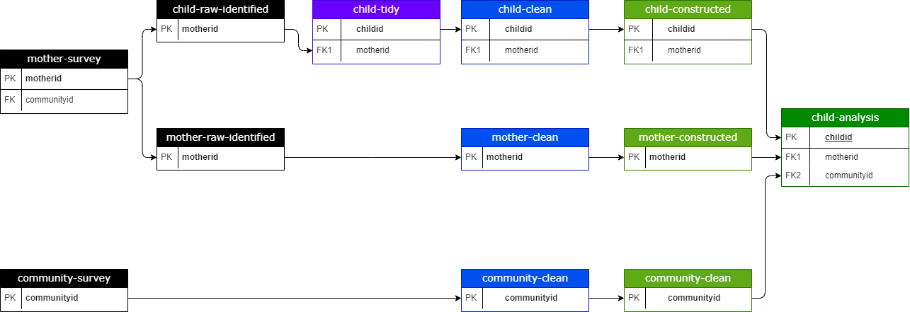

<div id="left"> <img src="img/DIL_logo_safespace_RGBFull Color.svg" alt="DIL logo" width="400"> </div> # Tidying data DIL Team Week
## Motivation In this session, we will try to answer 3 questions: 1. What is the best format to handle data in statistical software? 1. Why is this format the best? 1. How can we get data into this format? You need to be able to answer them to [create good data sets](https://devinnovationlab.github.io/guides/principles/data.html#create-good-data-sets). --- ## Motivation Suppose you are working with this data set. How would you calculate the average age of the **children** in the data? | motherid | age | educ | n_children | age_ch1 | age_ch2 | age_ch3 | |----------|-----|------|------------|---------|---------|---------| | 654031 | 25 | 3 | 1 | 5 | | | | 655063 | 35 | 4 | 3 | 15 | 13 | 8 | | 633058 | 21 | 2 | 2 | 2 | 1 | | | 652047 | 40 | 3 | 3 | 12 | 10 | 8 | --- ## Motivation Suppose you are working with this data set. How would you calculate the average age of the **children** in the data? | motherid | childid | age | mother_age | |----------|----------|-----|------------| | 654031 | 65403101 | 5 | 25 | | 655063 | 65506301 | 15 | 35 | | 655063 | 65506301 | 13 | 35 | | 655063 | 65506301 | 8 | 35 | | 633058 | 63305801 | 2 | 21 | | 633058 | 63305801 | 1 | 21 | --- ## Motivation Suppose you are working with this data set. How would you calculate the average age of the **mothers** in the data? | motherid | childid | age | mother_age | |----------|----------|-----|------------| | 654031 | 65403101 | 5 | 25 | | 655063 | 65506301 | 15 | 35 | | 655063 | 65506301 | 13 | 35 | | 655063 | 65506301 | 8 | 35 | | 633058 | 63305801 | 2 | 21 | | 633058 | 63305801 | 1 | 21 | Note: Compare your code and answer the following questions: 1. What data format is more convenient to calculate child-level statistics? 1. What data format is more convenient to calculate mother-level statistics?
Tidy data
Some semantics
Data can be acquired in all shapes and sizes
In our line of work, it is mostly stored as one or multiple
data tables
, like the ones we were just working on
Data tables organize information into rows and columns
This kind of data is often called
tabular
or
rectangular
data
Can you think of an example of non-tabular data?
Some semantics
A dataset is a collection of
values
Every value belongs to a
variable
and an
observation
A
variable
contains all values that measure the same underlying
attribute
(like height, temperature, grade) across
units
An
observation
contains all values measured on the same
unit
(like a person, or a day, or a combination of child and subject) across
attributes
## Tidy data 1. Each **column** corresponds to one **variable** 2. Each **row** corresponds to one **observation** 3. Each **data table** corresponds to one **unit of observation** <div class="highlight"> <p class="fragment fade-in"> Every other format is "untidy" </p> </div> --- ## `mother_wide` | motherid | age | educ | n_children | age_ch1 | age_ch2 | age_ch3 | |----------|-----|------|------------|---------|---------|---------| | 654031 | 25 | 3 | 1 | 5 | | | | 655063 | 35 | 4 | 3 | 15 | 13 | 8 | | 633058 | 21 | 2 | 2 | 2 | 1 | | | 652047 | 40 | 3 | 3 | 12 | 10 | 8 | Note: - is this data tidy? - why not? - have you seen data in this format before? - why is this format useful? --- ## `mother_long` | mother_id | yob | name | value | |-----------|-------|------------|-------| | 0101 | 1998 | village_id | 01 | | 0101 | 1998 | age | 24 | | 0101 | 1998 | educ | 4 | | 0101 | 1998 | n_children | 1 | | 0102 | 1982 | village_id | 01 | | 0102 | 1982 | age | 40 | | 0102 | 1982 | educ | 10 | | 0102 | 1982 | n_children | 4 | --- ## `child` | motherid | childid | age | mother_age | |----------|----------|-----|------------| | 654031 | 65403101 | 5 | 25 | | 655063 | 65506301 | 15 | 35 | | 655063 | 65506301 | 13 | 35 | | 655063 | 65506301 | 8 | 35 | | 633058 | 63305801 | 2 | 21 | | 633058 | 63305801 | 1 | 21 | Note: - is this data tidy? - why not? - have you seen data in this format before? - why is this format useful?
Why tidy data?
## Why use tidy data? <div> <ul> <li class = "fragment fade-in">Easier to change the format of a single column instead of multiple columns (in wide format)</li> <li class = "fragment fade-in">Easier to handle data if all rows in each column have the same data type (in long format, that is often not the case)</li> <li class = "fragment fade-in">Easier to calculate statistics when the unit of observation and unit of analysis are the same</li> <li class = "fragment fade-in">Easier to create visualizations when each value into the data will be one data point in the graph</li> <li class = "fragment fade-in">Easier to aggregate observations having tidy data as a starting point</li> <ul> </div> --- ## When to use tidy data? <ul> <li>As we've discussed, sometimes we can only perform the analysis we are interested in using untidy data</li> <li class="fragment fade-in">Still, this format is extremely useful for other stages of the data work, including data cleaning and indicator construction</li> <li class="fragment fade-in">If we are interested in analyzing data in multiple units of observations, we'll likely need analysis data sets that are as close to tidy as possible for each of these units</li> </ul>
Tidying data
## Tidying data How can we turn this into a tidy table? | mother_id | yob | name | value | |-----------|-------|------------|-------| | 0101 | 1998 | village_id | 01 | | 0101 | 1998 | age | 24 | | 0101 | 1998 | educ | 4 | | 0101 | 1998 | n_children | 1 | | 0102 | 1982 | village_id | 01 | | 0102 | 1982 | age | 40 | | 0102 | 1982 | educ | 10 | | 0102 | 1982 | n_children | 4 | --- ## Tidying data <ul> <li class="fragment fade-in">By reshaping it so that variables are represented in columns, not rows</li> <li class="fragment fade-in"> <span class="highlight">Reshaping</span> means transforming how values are organized into rows and columns in a data table in a way that the unit of observation represented by each row is changed</li> </ul> --- ## Tidying data How can we turn this into a tidy table? | motherid | age | educ | n_children | age_ch1 | age_ch2 | age_ch3 | |----------|-----|------|------------|---------|---------|---------| | 654031 | 25 | 3 | 1 | 5 | | | | 655063 | 35 | 4 | 3 | 15 | 13 | 8 | | 633058 | 21 | 2 | 2 | 2 | 1 | | | 652047 | 40 | 3 | 3 | 12 | 10 | 8 | --- ## Tidying data <ol> How can we turn this into a tidy table? <li class="fragment fade-in">Create two separate data tables, one where the unit of observation is the mother, and one where it is the child</li> <li class="fragment fade-in">Reshape the child-level data so that each observation is represented in a row, not in different columns</li> </ol> --- ## Reshaping <ul> <li class = "fragment fade-in">In R: <code>pivot_longer</code> + <code>pivot_wider</code></li> <li class = "fragment fade-in">In Stata: <code>reshape</code></li> <li class = "fragment fade-in">Always have the help file for these functions open when using them!</li> <li class = "fragment fade-in">What can go wrong when reshaping?</li> <li class = "fragment fade-in">Important checks: <ul> <li>Drop blank rows</li> <li>Check that the number of rows matches the number of individuals in the new unit of observation</li> </ul> </li> <ul> --- ## Tidying data Why are ID or key variables important when tidying data? <p class="highlight fragment fade-in">Because they allow us to connect different data tables</p>
Some practical tips
## Some practical tips <ul> <li class = "fragment fade-in">Group variables by module and add them to the same tidy table</li> <li class = "fragment fade-in">Use prefixes to variable names to identify modules (it will make reshaping a lot easier)</li> <li class = "fragment fade-in">Name tidy data tables in a way that makes it easy to identify its unit of observation (e.g. <code>household-demographics</code>, <code>child-subject-grade</code>)</li> <ul> --- ## Some practical tips Keep documentation about the different units of observation in your data and how their respective data tables can be linked  --- ## Some practical tips Keep documentation about the different units of observation in your data and how their respective data tables can be linked | Table name | Group code | Dofile | Unique ID | Observations | |------------|------------|--------|------------|---------| | `tr-teacher-training.dta` | tt | `tt-tr.do` | `tr_id` + `key` | 1681 | | `tr-teacher-act-engagement.dta` | ec | `ec-tr.do` | `tr_id` + `act` + `key` | 5241 | | `tr-teacher-income-source.dta` | yc | `ys-tr.do` | `tr_id` + `key` + `ys_id` | 2648 |
Questions?
## References - [Wickham, H. (2014). Tidy Data. Journal of Statistical Software, 59(10), 1-23.](https://doi.org/10.18637/jss.v059.i10) - [Grolemund, G., & Wickham, H. (2017). Chapter 6 - Data tidying. R for Data Science. O'Reilly Media.](https://r4ds.hadley.nz/data-tidy.html)